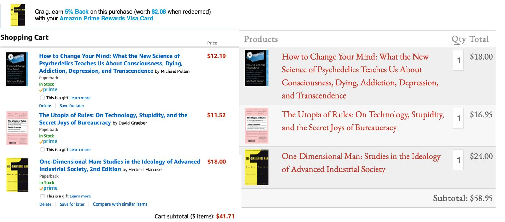

On Buying Books
I'm currently between books, which means that I am catching up on the pile of the Atlantic magazines sitting on my nightstand. While on my trip to the west coast, I found myself in lots of unique book stores, whereat I picked up several books. Typically, I read books on my iPad bought from Apple for around $10 - $15. Since you cannot buy ebooks at a book store, I found myself with several old-fashion dead-tree books.
It's a nice feeling reading a real book. I can flip around more easily. I don't need to charge your book. I'm not staring at an illuminated screen. I don't get distracted by notifications or temptation to check email. There are of course downsides. I can't look up a word by clicking on it. I don't have an entire library at your fingertips. Navigating to the endnotes and back is finger acrobatics.
But overall I like reading paper books and my iPad has become painfully slow to use. So I'm switching to paper books—at least for now, noting that I typically alternative between books and ebooks every five years, n = 2.
So how do I buy books now? The books I picked up on my trip were from independent bookstores. They were priced higher than the Apple Books, and I suspected they were priced higher than on Amazon. Now that I need to get some books, I decided to take a deeper look.

OK so here are three books that I want to get. It comes out to just under $40 on Amazon if I include the 5% back from my Amazon Prime credit card. Diving a bit deeper in to the math, based upon my 2018 spending at Amazon and Whole Foods balanced against the $120 cost of Prime, I end up getting a bit north of 3% back.
Compare this to Porter Square Book, my local independent bookstore. These books come out to just under $60, or about 50% more than Amazon. There are some other comparison points. Amazon has free two day shipping. For Porter Square Books, I (have to) go to the store to pick up the books in person—otherwise shipping is $10. I also figure it will take them a couple days to get Marcuse from their warehouse. Well, they are in the People's Republic of Cambridge, so maybe Marcuse is on the shelves.
The short term cost difference here is a notable $20—or 50% more if you want to look at it that way. It's a bit harder to measure the long-term cost difference, whether to me or to the community. On their website, Porter Square Books claims that 68% of the money I spend stays in the community compared to 43% if I use a national chain. I am not sure whether this comparison is to a brick and mortar store like Barnes and Noble or to Amazon. Things like creating local jobs and ensuring that the business tax dollars get reinvested in Cambridge are much harder to quantify. Amazon generally doesn't pay any federal taxes, but they do pay state taxes. I'm not sure how their state tax rate compares to Porter Square Books and how much of that would actually go to Cambridge.
None of those things I described actually save me money now. I'm not actually sure any of these things would save me money later. The hardest to quantify part is how buying local and independent betters (or I guess worsens) communities. Perhaps these things are not meant to be quantified.
It's hardly controversial to say that Amazon is evil, yet I, like so many others, have a Prime account and find the convenience of "free" two day shipping hard to resist. There's even an Echo Dot in my apartment! And of course, many of the things Amazon has done are obviously not evil. Improvements to delivery logistics, data storage, and streaming have probably gone on to help people doing very good things. While I, on a medium to high horse, could ask "who really needs something delivered in two days?" I'd bet that reduced delivery times or cloud web services championed by Amazon have literally saved lives. And I don't want to attempt to balance that against lives ruined or lost due to the "evil" parts of Amazon.
I can't actually come to a conclusion which option costs less in the long term. Or rather I am not going to invest the time and make the assumptions necessary to do so. For what it's worth, I bought the books from Porter Square Books. The $20 difference is roughly the cost of two drinks out at a bar, and I barely drink these days.
The cosmic joke here, I write now one day after drafting everything above, is that I need to get an older book before the weekend and the only way I can reasonably do so is to order it via Amazon. So both Amazon and Porter Square Books get my book business this week. Hah.